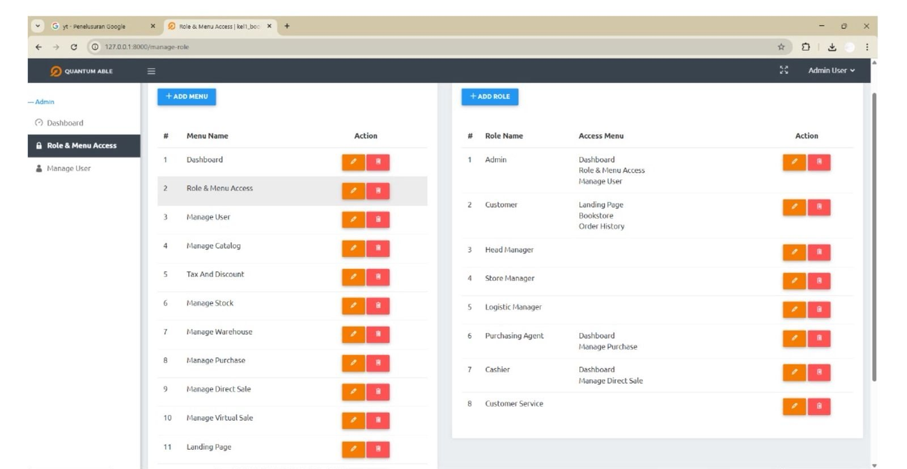
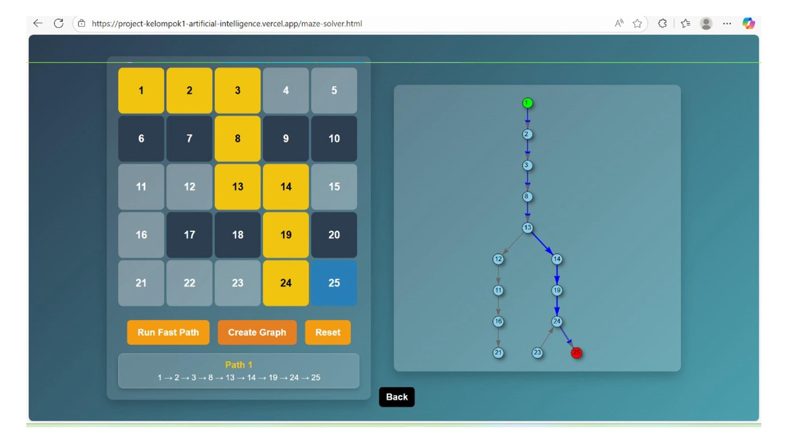
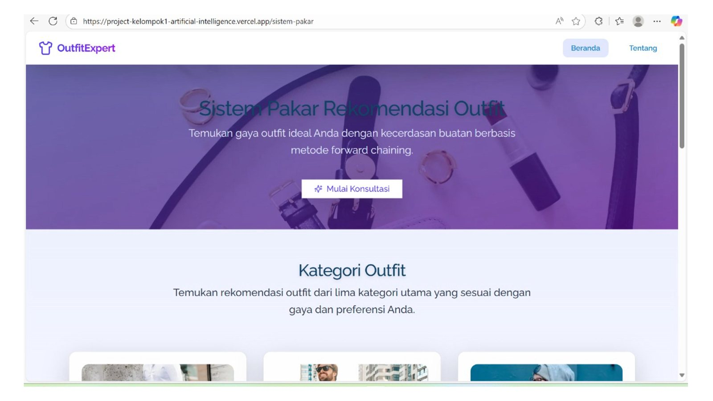
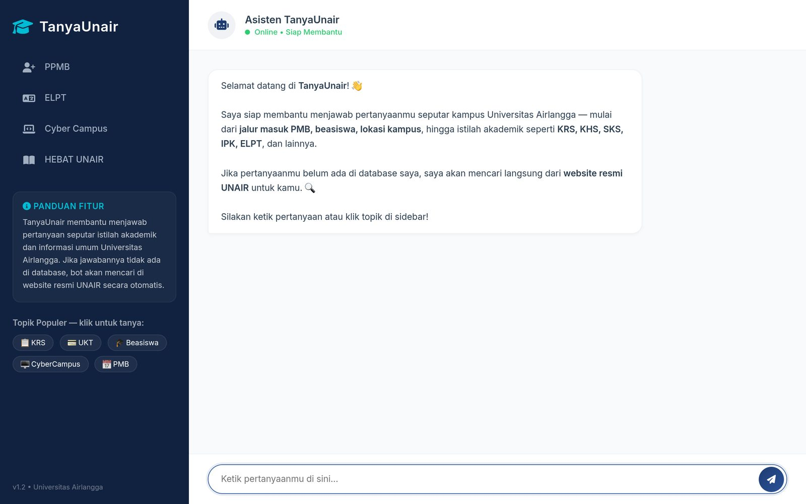
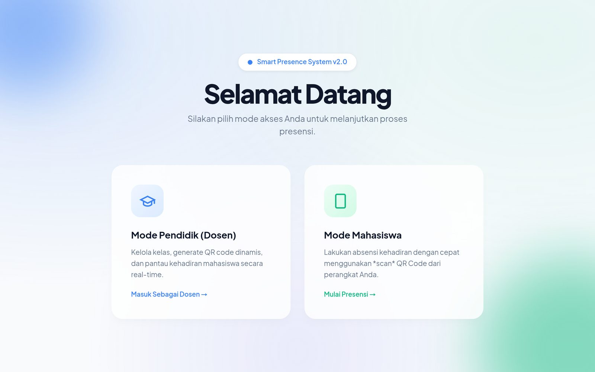

Frontend Engineering
Clean, responsive interfaces with attention to accessibility, rhythm, and detail.
Open to internships & entry-level roles
I'm Inunk Rodliyah, an Informatics Engineering student at Universitas Airlangga. I work across front-end, back-end, and UI/UX — with a growing focus on computer networking.
Technical toolkit: HTML and CSS, JavaScript, PHP, MySQL, Java, Figma, REST APIs, computer networks, UI/UX design, and Agile workflow.

01 — About me
I'm Inunk Rodliyah, a D4 Informatics Engineering student at Universitas Airlangga with a 3.49 GPA. My interest sits at the intersection of logic and design — building web applications that are as dependable behind the scenes as they are clear on the surface.
I've led academic teams, designed interfaces in Figma, and explored computer networking fundamentals along the way. I care about understanding the problem before writing the first line of code, and I'm always looking for a better way to make an experience feel simple.
02 — Expertise
From the first wireframe to the final database query — here's where I'm strong today, and what I'm continuing to deepen.
Clean, responsive interfaces with attention to accessibility, rhythm, and detail.
Structured logic, database design, and data flows that keep products reliable.
From user flows to interactive prototypes, grounded in real user needs.
A solid computer science foundation, applied to practical problems.
How I work
03 — Selected work
Eight academic builds across web development, intelligent systems, and interface design.

01Web Application
A web-based management system for inventory, sales, and stock reporting — with an emphasis on dependable back-end logic, secure transactions, and clear admin workflows.
Web & Mobile Application
A recipe-sharing application with advanced search, category management, and ratings. Focused on a friendly front-end experience and clean RESTful API integration.

03Algorithms & Data Structures
An interactive maze game that applies Breadth-First Search to find the shortest exit path, turning core algorithms into a visual, hands-on tool.
View project
04Artificial Intelligence
An expert system that recommends outfits based on weather, event, and mood, using forward chaining for intelligent, context-aware decision-making.
View projectE-Commerce
A functional e-commerce site for fragrance products, complete with a shopping cart, checkout flow, and admin-side product management.
View projectUI/UX Design
End-to-end interface design for two applications — user flows, wireframes, and high-fidelity prototypes built around user-centered design and accessibility.

07Artificial Intelligence
An AI-powered academic assistant for Universitas Airlangga — answering questions about KRS, scholarships, admissions, and campus services, with a live search fallback to official UNAIR pages.
View project
08Web Application
A smart attendance system built around dynamic QR codes — lecturers generate time-limited tokens while students check in in real time, with live attendance tracking and class dashboards.
View project04 — Journey
A timeline of the experiences shaping how I think, collaborate, and build.
2023 — Present
Universitas Airlangga · GPA 3.49 / 4.00
Building a foundation in web programming, interface design, algorithms, and computer networks while applying every concept through hands-on projects.
Academic projects
Cross-functional student teams
Led project planning, task distribution, and team communication using Agile basics — turning open-ended briefs into delivered prototypes and reports.
Student organization
Informatics Engineering student association
Collaborated on campus initiatives while balancing coursework and team projects, strengthening communication, coordination, and time management.
Beyond the classroom
Self-directed exploration
Deepening practical knowledge in computer networking and UI/UX through independent study, experimentation, and feedback.
Effective communication matters as much as clean code.
Balancing studies, projects, and organizational responsibilities taught me that discipline, time management, and attention to detail are just as important as technical skill.
05 — Contact
I'm open to internships, entry-level opportunities, and collaborative work in web development, UI/UX, or networking. I'd be glad to hear from you.